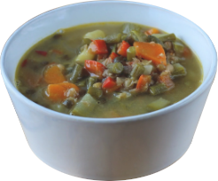

return to homepage
Spicy Lentil Soup

Image taken from allrecipes.com (opens in new tab)
Description
"This is a healthy, hearty, spicy, relatively easy-to-make, delicious soup recipe. The roasted peppers really make it something special. I just made it up and am eating it now, and I am in love."
Recipe by hot_curry (opens in new tab). These instructions will make four servings.
Ingredients
- 1 red bell pepper
- 1/2 green bell pepper
- 3 cups water
- 1 cup brown lentils
- 1 tablespoon olive oil
- 1 carrot, sliced
- 1 onion, chopped
- 1 broccoli floret, chopped
- 2 cups vegetable broth
- 1 tablespoon crushed red pepper flakes
- 1 tablespoon ground ginger
- one tablespoon ground black pepper
- 1 teaspoon dried thyme leaves
- 1 teaspoon dried rubbed sage
Directions
- Preheat an oven to 375 degrees F (190 degrees C). Line a baking sheet with aluminum foil.
- Cut the peppers in half from top to bottom; remove the stem, seeds, and ribs, then place the peppers cut-side-down onto the prepared baking sheet.
- Bake in the preheated oven until limp, 30 to 40 minutes. Turn the peppers over halfway through cooking. Once ready, place the peppers into a bowl, and tightly seal with plastic wrap. Allow the peppers to steam as they cool, about 20 minutes. Once cool, remove the skins and discard. Chop the peppers
- Meanwhile, bring the water and lentils to a boil in a saucepan over high heat. Reduce heat to medium-low, cover, and simmer until the lentils are tender, about 30 minutes. Drain, rinse, and set aside.
- Heat the olive oil in a large saucepan over medium heat. Stir in the carrot, onion, and broccoli; cook and stir until the onion has softened, about 5 minutes. Pour in some of the vegetable broth, cover, and steam the vegetables until tender. Pour in the remaining vegetable broth and chopped peppers; season with the red pepper flakes, ginger, black pepper, thyme, and sage. Simmer until the flavors come together and the vegetables are very tender, about 20 to 30 minutes. Add water if needed to maintain your desired consistency. Stir in the cooked lentils until hot.
- If desired, pour the soup into a blender, filling the pitcher no more than halfway full. Hold down the lid of the blender with a folded kitchen towel, and carefully start the blender, using a few quick pulses to get the soup moving before leaving it on to puree. Puree in batches until smooth and pour into a clean pot. Alternately, you can use a stick blender and puree the soup right in the cooking pot.
return to homepage